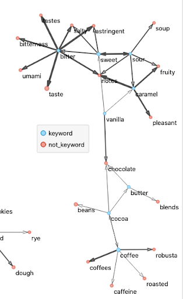

Project information
- Category: Project
- Position: Research Assistant
- Project date: September 2021 - Present
Natural Language Processing in Food Science
Developed a model to analyze the relationship between sensory and chemical descriptions of food products using word2vec models and visualized the results using Orange, Tableau and Gephi. The model was able to detect unusual patterns in between sensory and chemical descriptions.
- Analyzed word relations from 40,000+ abstracts and created scripts to fetch abstracts, clean data, and train models
- Worked with food science professors to detect unusual patterns in between sensory and chemical descriptions through Gensim word2vec models visualized in Orange, Tableau and Gephi
Inspiration
This research area is based on another research paper that was published in nature called "Unsupervised word embeddings capture latent knowledge from materials science literature". The paper was about how word2vec models can be used to analyze the relationship between chemical and physical properties of materials.
Our Approach
We decided to tak the approach utilized by this paper and modify it to work for our scenario. We
started by observing 4 different journals from which we scraped abstracts to build our dataset
(60k+ abstracts). This dataset is then cleaned and preprocessed to remove stop words, punctuation,
and other unnecessary characters. We then train our word2vec model on this dataset and use the
model to analyze the relationship between sensory and chemical descriptions of food products.
One important distinguishing factor between our approach and the approach used in the paper is that
our dataset is much smaller than the dataset used in the paper. This is because we are working with
a very specific domain (food science) and the number of abstracts available for this domain is
limited. To compensate for this, we utilized Google's word2vec to model to provide a
foundation for the model and trained our model on top of it. This allowed us to achieve similar results
to the paper.
Results
Below is an example of some of the findings found from our analysis.
